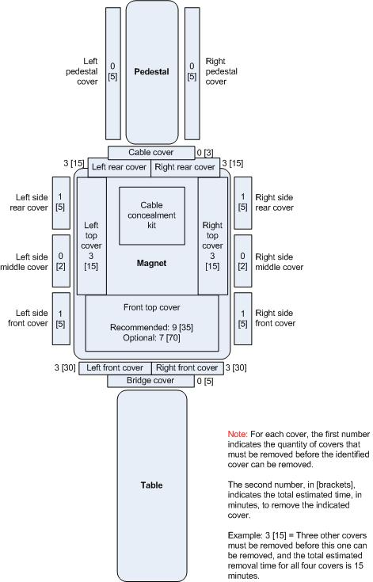
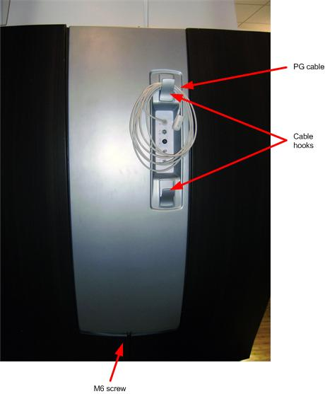
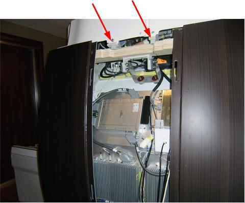
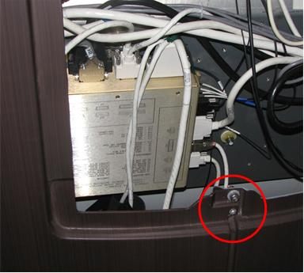
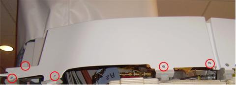
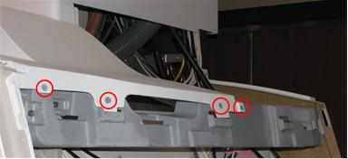

Operating Documentation
Direction 5670006, Rev# 1
Discovery MR750w GEM Service Methods
Module Version 5.0, Version Date 10/18/11
Operating Documentation |
| Required Persons | Preliminary Reqs | Procedure | Finalization |
|---|---|---|---|
| 2 persons for Front Top Cover, 1 for all other Covers | Not Applicable | See Procedure Overview. | Not Applicable |
For some of the Side and Top Covers, other covers must be removed first. This diagram shows the names of the GEM-style covers, which covers can be removed individually and which need other covers removed first, and the estimated removal time for each cover. Installation time is estimated to be the same as the removal time.
Illustration 1: Covers and Removal, Top View

| Item | Qty | Effectivity | Part# | Manufacturer | |
|---|---|---|---|---|---|
| Non-Magnetic Service Tool Kit | 1 | - | 5113258 or 5112581 | - | |
| Cut-Resistant Gloves | 1 Pair | - | - | - | |
| ||||
| Strong Magnetic Field! | ||||
| Ferrous materials can become dangerous projectiles in the presence of the magnetic field Produced by the Magnet. | ||||
| Do not Bring any ferromagnetic tools or equipment into the magnet room. |
This sub-procedure is written for removal of the covers on the left side of the scanner, however the procedure for the right side is similar. On each side, the Side Middle Cover must be removed before the Side Rear Cover or Side Front Cover can be removed.
(For the Left Side Middle Cover only) Label locations as needed and disconnect all cables except for the top PG cable.
| NOTE: | The PG cable is fiber optic and should be handled with care. |
Remove the M6 Allen screw at the bottom of the Left Side Middle Cover.
Illustration 2: Left Side Middle Cover

| ||||
| When removing the Left Side Middle Cover, carefully thread the top PG cable through the cable opening in the cover. | ||||
Holding the cover on each side, lift cover up and off its two support brackets.
Illustration 3: Left Side Middle Cover Top Brackets

If not already done, remove the M6 screw fastening the Front and Rear Covers together.
Illustration 4: Left Side Rear and Front Cover Junction

Slide the cover toward the rear and lift the cover up and off its two support brackets.
If not already done, remove the M6 screw fastening the Front and Rear Covers together.
Slide the cover toward the front and lift the cover up and off its two support brackets.
This sub-procedure is written for removal of the Left Top Cover of the scanner, however the procedure for the Right Top Cover is similar.
Before the Left (or Right) Top Cover can be removed, the Left side (or right Side) Middle and Rear Covers must be removed. In addition, the Cable Cover must be removed. For instructions on removing the Cable Cover, see Rear Cover Removal and Installation.
Before the Front Top Cover can be removed, either all side covers and both Left and Right Side Top Covers must be removed or the Left and Right Front Covers must be removed. It is highly recommended that you remove the Side and Left and Right Side Top Covers rather than removing the Front Covers due to the complexity of Front Cover removal.
Use a side shield to protect magnet components.
Verify that the Left Side Middle and Rear Covers have been removed as well as the Cable Cover.
Remove the five (5) M10 screws at the base of the Left Top Cover.
Illustration 5: Left Top Cover

Remove the Left Top Cover.
Remove the four (4) M10 screws on each side of the Front Top Cover.
Illustration 6: Front Top Cover

With one person holding each side, slide the Front Top Cover toward the rear far enough to lift it off.
Remove the four (4) M10 screws on each side of the Front Top Cover.
With one person holding each side, slide the Front Top Cover toward the front and lift it off.
With one person holding each side, lift the Front Top Cover and slide it toward the front until it is in position under the front cover.
Install the four (4) M10 Allen screws on each side of the Front Top Cover.
With one person holding each side, lift the Front Top Cover and slide it toward the rear until it is in position.
Install the four (4) M10 screws on each side of the Front Top Cover.
Lift the Left Top Cover into position, fitting the tabs into the slots of its brackets.
Install the four M10 Allen screws at the base of the cover.
This sub-procedure is written for installation of the covers on the left side of the scanner, however the procedure for the right side is similar. On each side, the Side Front and Rear Covers must be installed before the Side Middle Cover can be installed.
Lift the cover tabs at the top over its two support brackets.
Slide the cover toward the rear until it is seated. Make sure its tabs on the front edge fit into the slots.
When both Front and Rear Side Covers are mounted, install the M6 Allen screw to fasten Front and Rear Side Covers together.
Lift the cover tabs at the top over its two support brackets.
Slide the cover toward the front until it is seated. Make sure its tabs on the rear edge fit into the slots.
When both Front and Rear Side Covers are mounted, install the M6 Allen screw to fasten Front and Rear Side Covers together.
Move the cover close to position.
Carefully thread the top PG cable through the cable opening in the cover to the outside of the cover.
| NOTE: | The PG cable is fiber optic and should be handled with care. |
Lift the cover onto its two support brackets.
Install the M6 Allen screw at the bottom of the cover.
Reconnect all cables.
No finalization steps.